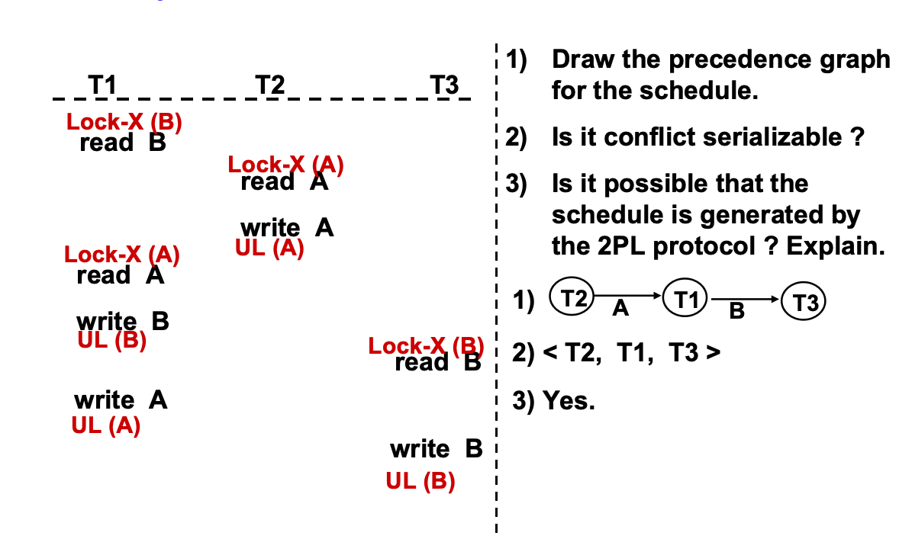

Lesson13
Concurrency Control
Lock-Based Protocols
数据项可以以两种方式lock: + X-lock:可以读取也可以写入(独占X模式) + S-lock:仅能写入(共享S模式)
此时： + 如果一个事务已经对一个数据项持有X-lock，其余事务不能在该数据项上持有任何锁 + 任意数量的事务可以在同一数据项上持有S-lock + 如果一个数据项不能授予一些事务锁，这些事务会等待
锁定协议是所有事务在请求和释放锁时遵循的一组规则。锁定协议通过限制可能的调度集来确保事务的正确执行。
死锁(deadlock)：考虑如下场景：
T3 T4
lock-X(B)
...
lock-S(A)
lock-S(B)
lock-X(A)
这下3/4都不可能执行了，因为如果要lock-S(B)就得等T3结束释放B，但是T3结束之前要lock-X(A)，又得等T4结束释放A，这下谁都commit不了了。
死锁处理：为了处理死锁，必须回滚其中一个事务（T3 或 T4），并释放它所持有的锁。
死锁不可避免地出现，潜在风险出现大多数协议中，同时还有可能导致"饥饿"问题：
- 某个事务想请求独占一个数据项，但是其他事务已经获得了它的共享锁
- 这个事务就一直回滚
并发控制管理器可以通过合理设计来防止饥饿现象。
The Two-Phase Locking Protocol
两阶段锁协议，分为两个阶段：
- Growing Phase：事务可以获取锁，但不能释放锁
- Shrinking Phase: 事务释放掉所有的锁，后续不能再获得任何锁
该协议确保可串行化性。可以证明，事务的执行顺序可以按照它们最后获得锁的时刻（即事务获取其最终锁的点）来进行串行化。
两阶段锁定协议并不能确保避免死锁。
在此情况下，可以使用更加严格的方式，即严格两阶段锁定（Strict Two-Phase Locking）：在这个协议中，事务必须一直持有所有锁，直到提交或回滚为止。在此协议下，事务可以按照提交的顺序进行串行化。
即使使用两阶段锁定协议，也可能会有一些冲突可串行化的调度无法被实现。
然而，在没有额外信息（例如，数据访问的顺序）情况下，两阶段锁定对于冲突可串行化是必要的。
不能，因为进入释放阶段后，又有事务申请了数据项的锁(如T1)。
两阶段锁定协议与锁转换：
- 第一阶段：
- 可以在数据项上获取共享锁（lock-S）
- 可以在数据项上获取独占锁（lock-X）
- 可以将共享锁（lock-S）转换为独占锁（lock-X）（升级）
- 第二阶段：
- 可以释放共享锁（lock-S）（解锁）
- 可以释放独占锁（lock-X）（解锁）
- 可以将独占锁（lock-X）转换为共享锁（lock-S）（降级）
Automatic Acquisition of Locks
- read操作
scss if Ti have lock on A: read(A) else if other don't have lock-X on A: grant lock-S on (A) read(A) - write操作
scss if Ti have lock-X on A: write(A) else wait until no lock on A: if Ti have lock-S on A: upgrade to lock-X on A write(A) else grant lock-X on A write(A)
lock manager
- 锁管理器可以作为一个独立的进程实现，事务将锁和解锁请求发送给它
- 锁管理器通过发送锁授权消息来回复锁请求（如果发生死锁，它会发送要求事务回滚的消息）
- 请求锁的事务会一直等待，直到它的请求得到答复
- 锁管理器维护一个数据结构，称为锁表，用于记录已授予的锁和待处理的请求
- 锁表通常作为一个内存中的哈希表实现，索引是被锁定的数据项的名称
- 蓝色表示授予锁，白色表示等待中的请求授予
- 新的请求会被添加到队尾，只有与前面兼容才会被授予
- 如果事务回滚，所有该事务的等待或已授予的请求都会被删除
example:

Graph-based protocols
-
强加部分排序： 图形协议要求对数据项集合 \(D = \{d_1, d_2, ..., d_h\}\) 强加一个部分排序（denoted by \(\rightarrow\)）。这个部分排序表示数据项之间的访问顺序关系。
-
如果 \(d_i \rightarrow d_j\)，这意味着任何一个访问 \(d_i\) 和 \(d_j\) 的事务，必须先访问 \(d_i\)，然后再访问 \(d_j\)。
-
数据库图： 这种部分排序关系将数据项集合 \(D\) 视作一个DAG，被称为数据库图（database graph）。
-
在这个图中，图中的每个节点代表一个数据项，而边代表数据项之间的访问顺序。由于是无环图，意味着不会形成循环依赖，避免了死锁的发生。
树协议是图形协议的一种简单形式。树协议要求数据库图中的关系必须形成一个树结构。
这是描述树协议（Tree Protocol）的一些关键规则，树协议作为一种图形协议的简单形式，要求事务对数据项的访问遵循特定的顺序，并且有一定的约束。
详细解释：
-
只允许排他锁（Exclusive Locks）：
-
在树协议中，只能使用排他锁，即每次只有一个事务可以访问某个数据项，这样可以避免事务之间的冲突。
-
第一个锁可以在任何数据项上：
-
事务 \(T_i\) 可以首先在任何数据项上请求并获得排他锁，这个数据项的选择是自由的。
-
之后的数据项锁定要求：
-
在事务 \(T_i\) 获得一个数据项锁后，接下来它只能请求一个数据项 \(Q\)，如果且仅如果该数据项的父数据项已经由 \(T_i\) 锁定。
-
换句话说，如果事务 \(T_i\) 想要访问数据项 \(Q\)，它必须先访问并锁定 \(Q\) 的父节点。这种限制可以有效地避免锁定顺序混乱，保证访问顺序的有序性。
-
数据项可以随时解锁：
-
事务 \(T_i\) 可以在任何时刻解锁它所持有的锁。解锁操作不受严格的时间约束，允许事务灵活地释放资源。
-
一旦解锁后不能重新锁定：
-
如果事务 \(T_i\) 已经对某个数据项进行了锁定和解锁操作，那么之后它不能再次对该数据项进行锁定。
- 这意味着，数据项在被解锁后，它不会再被同一个事务再次锁定，避免了某些不必要的锁操作，也减少了死锁的可能性。
树协议的优点主要在于保证了冲突可串行化和免死锁，且事务可以更早解锁数据项，从而提高了并发性。但缺点则集中在其不能保证可恢复性和级联自由，且可能带来额外的锁定开销和减少并发性。
*Timestamp-Based Protocols
*Validation-Based Protocols
Multiple Granularity
- 粗粒度代表高层，如数据库、表
- 细粒度代表底层，如行、列
当一个事务锁定了粗粒度的节点，其也隐式地锁定了其下方粒度相对小的子节点，且模式一致。
Problem: T1 locked ra1 in X-lock, T2 locked Fb in S-lock. Now T3 wishes to lock Fa in S-lock. T4 wishes to lock the entire DB in S-lock. (search the entire tree!)
引入意图锁的概念，一个节点被锁定的时候，会在其所有祖先节点加上意图锁，表示其希望锁定该节点及其所有资源(子节点)，用于表示事务计划在较低层级的某些数据项上进行显式的锁定，而不必逐一检查每个子节点。
- IS：子节点显式存在S-lock节点
- IX：子节点显式存在X-lock节点
- SIX: S + IX：子节点显式全为S-lock节点，同时更低的后代存在X-lock节点
多粒度锁定协议（Multiple Granularity Locking, MGL）：
-
根节点的加锁：
-
根节点（Tree root）可以在任何锁模式下加锁（S, X, IS, IX, SIX 等），但加锁必须从根节点开始。
-
子节点的加锁：
-
如果事务 Tₖ 想要加锁节点 Q，必须遵守加锁兼容性矩阵。这意味着 Tₖ 不能以某种锁模式去加锁与当前已经加锁的模式冲突的节点。
-
共享锁 (S) 和意图共享锁 (IS)：
-
事务 Tₖ 可以在父节点已被 Tₖ 锁定为 IX（意图排他锁）或 IS（意图共享锁）模式下，再锁定节点 Q 为 S（共享锁）或 IS（意图共享锁）模式。
-
排他锁 (X), 共享排它型意向锁 (SIX), 意图排他锁 (IX)：
-
事务 Tₖ 只有在父节点已被 Tₖ 锁定为 IX 或 SIX 模式时，才可以锁定节点 Q 为 X（排他锁）、SIX（共享排它型意向锁）或 IX（意图排他锁）模式。
-
事务的两阶段锁定协议：
-
事务 Ti 必须遵循两阶段锁定协议（2PL）：即它必须首先获取所有需要的锁（加锁阶段），然后在释放锁时不能再获取新的锁（解锁阶段）。换句话说，事务 Ti 在释放锁之前不能再请求新的锁。
-
解锁规则：
-
事务 Ti 只有在子节点未被锁定的情况下才能解锁节点 Q。也就是说，解锁操作只能发生在叶节点，解锁顺序是自下而上的（即先解锁子节点，再解锁父节点）。
-
加锁和解锁顺序：
-
加锁顺序是自顶向下（从根节点开始，逐步往下锁定子节点）。
- 解锁顺序是自下而上（从叶节点开始，逐步向上解锁父节点）。
*Multiversion Schemes
Deadlock Handling
Deadlock Prevention
- 预声明锁定策略：事务在开始之前就声明并锁定自己需要锁定的数据项，在开始执行后将无法再获取其他锁。很明显的并发性差且难以预测(有些事务不能明确确定其需要的数据项)
- 数据项部分排序策略（Partial Ordering of Data Items）– 基于图的协议：即对于那些有依赖关系的数据项，施加部分排序，强制其锁定顺序，这样做不会出现循环，自然也不会出现deadlock
- wait-die策略与wound-wait策略
- wait-die策略：
- 较老的事务请求锁，而该锁已被较为年轻的事务持有，则较老的事务wait
- 较老的事务持有锁，较年轻的事务请求，则较年轻的事务die(回滚重新执行)
- wound-wait策略
- 较老的事务请求锁，而该锁已被较为年轻的事务持有，则较老的事务wound较年轻的事务，即将其回滚重新执行
- 较老的事务持有锁，较年轻的事务请求，则较年轻的事务wait
- 都是较老的事务优先
- 不导致死锁
- wait-die策略：
- 超时策略：等一会你不给我，我直接回滚。可能导致该事务"饥饿"(一直回滚，没有执行的机会)
Deadlock Detection
等待图：一个有向图，\(T_i\)向\(T_j\)有边当且仅当\(T_i\)等待\(T_j\)释放数据项。
死锁发生的条件：显而易见的，存在环。
检测到死锁，我们需要解决，方法是：
- 以最小的代价，回滚部分事务(make a victim)
- 回滚程度
- 全部回滚：完全中止事务并重新开始。事务的所有已执行操作都会被撤销
- 部分回滚：只回滚事务到一定的状态，而不是完全回滚到开始执行时。事务会恢复到一个较早的检查点，直到达到死锁解除的需求
- 如果一个事务一直是victim，那么它就是饥饿的
Insert and Delete Operations
如果使用二阶段锁定（Two-Phase Locking，2PL）：
- 删除操作只有在删除元组的事务对待删除的元组拥有lock-X时才能执行。
- 向数据库插入新元组的事务会对该元组获得lock-X
插入和删除可能导致幻读现象（Phantom Phenomenon）。执行扫描操作的事务（例如，计算Perryridge所有账户余额的总和）和插入元组的事务（例如，在Perryridge插入一个新账户），在概念上会发生冲突，尽管它们没有访问共同的元组。
如果仅使用元组锁，可能会导致不可串行化的调度。
执行扫描操作的事务正在读取表示关系中包含哪些元组的信息，而插入元组的事务会更新相同的信息。这些信息应该被加锁。
一种解决方案：
- 将一个数据项与关系关联，表示关于该关系包含哪些元组的信息。
- 执行扫描操作的事务在该数据项上获取S-lock
- 执行插入或删除操作的事务在该数据项上获取X-lock（注意：数据项上的锁与单个元组上的锁不会冲突。）
索引锁定协议通过要求对某些索引桶加锁，提供了更高的并发性，并防止幻读现象的发生。
Index Locking Protocol
- 每个关系必须至少有一个索引。对关系的访问必须仅通过该关系上的某个索引进行
- 一个执行查找操作的事务 \(T_i\) 必须对其访问的所有索引桶加锁，且加锁模式为S-lock
- 事务 \(T_i\) 在向关系 \(r\) 插入元组 \(t_i\) 时，必须更新关系 \(r\) 上的所有索引
- \(T_i\) 必须对每个索引执行查找操作，以查找所有可能包含指向元组 \(t_i\) 的指针的索引桶（假设 \(t_i\) 已经存在），并对所有这些索引桶加锁，锁模式为X-lock
- \(T_i\) 还必须对其修改的所有索引桶获取X- lock
- 必须遵循二阶段锁定协议的规则